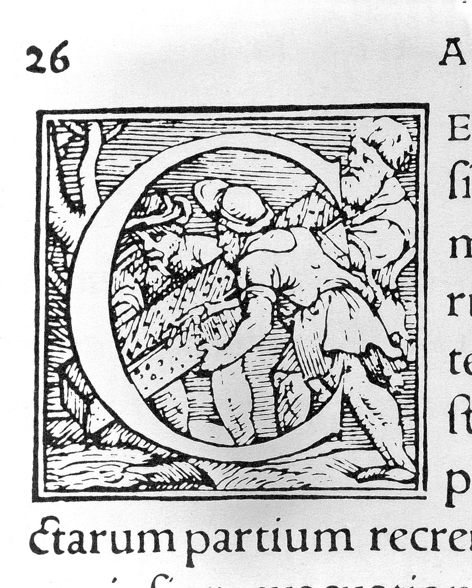

Vesalius changed how people understood the human body.
Instead of repeating old texts, he relied on direct observation through dissection. His illustrations helped spread that evidence to anyone who could read (and see) the anatomy.

About Vesalius
Andreas Vesalius (1514–1564) was a Renaissance anatomist best known for De humani corporis fabrica (1543). The book’s drawings are famous because they combine careful dissection with artistic composition, making complex structures easier to study.
Key idea: Vesalius argued that anatomy should be learned from the body itself, not only from ancient authorities.
Why drawings mattered
- Books travel,cadavers don’t.
- Clear images standardise what students should look for.
- Printmaking made anatomy “shareable science”.
Gallery (click a plate)
Analysis
1) Art + science
Vesalius’ plates are scientific, but they’re also staged: bodies pose like statues, landscapes add depth, and lighting makes muscles readable. This style kept students engaged and made the anatomy memorable.
- Composition directs the eye to key structures
- Shading separates layers (skin → muscle → organs)
- Figures look “alive”, so the anatomy feels real
2) Printing & technology
The drawings were turned into detailed woodcuts. That mattered because woodcuts could be printed repeatedly with text, spreading a consistent “reference anatomy” across Europe.
- Standardised images across many copies
- Enabled study without a live dissection
- Helped formalise anatomy education
3) Accuracy vs modern anatomy
Vesalius improved accuracy by dissecting humans, but some details still reflect the limits of the time (tools, preservation, and earlier beliefs). Use the plate annotations to list specific “right” and “wrong” examples.

Both show the same main bone groups, but Vesalius adds artistic pose and environment, while modern diagrams reduce detail to improve clarity.
4) Ethics & context
Dissection in the 1500s often relied on executed criminals and was shaped by religious, legal, and social rules.
- Access to bodies was limited and controversial
- Teaching dissections were public events
- Medical knowledge grew within cultural constraints
Legacy
Vesalius helped shift medicine toward evidence-based observation. His work influenced anatomy teaching, medical illustration, and later breakthroughs in physiology.
- Made anatomy a hands on discipline
- Set a new standard for scientific illustration
- Inspired later researchers to test ideas with evidence
“Vesalius’ anatomical drawings combined direct dissection with print technology, replacing inherited ideas with visual evidence and transforming how anatomy was learned.”
Sources & image credits
- Images: Wikimedia Commons / Wellcome Collection scans (see file names in
assets/img). - Book: De humani corporis fabrica (1543).